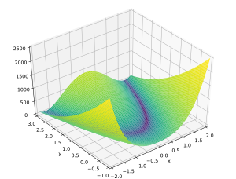

Rosenbrock's banana¶
\(f(x,y) = (a-x)^2 + b(y - x^2)^2\)
For the constants \(a = 1\) and \(b = 100\), the minimum is at \(f(1,1) = 0\).
import gaga as ga
Each individual in our population will have two genes, \(x\) and \(y\). We will define these in the range \(-2 < x < 2\) and \(-1 < y < 3\).
genes = {'x':(-2, 2),
'y':(-1, 3)}
We need to write a function that evaluates an individual and calculates it's fitness score from the objective function we are trying to minimise.
def evaluate(individual):
a = 1
b = 100
x = individual.genes['x']
y = individual.genes['y']
individual.fitness_score = (pow(a - x, 2) + b * pow(y - pow(x, 2), 2))
We run the simulation by passing it the genes and the evaluate function we defined earlier. We will run our simulation with a population size of 50 and for 25 epochs.
sim = ga.ga(gene_definition,
evaluate,
epoch = 25,
population_size = 50)
sim.run_simulation()
The following will display the gene values and the fitness score of the individual with the best fitness.
sim.results.print_best()
We can also display the fitness of the best individual at each epoch.
sim.results.plot_fitness()
{kind=link}
Finally, the following will generate an animation. We also specify the analytical minimum so that it is marked in the animation. By default, the animation is saved in a folder called results.
sim.results.animate('x', 'y', optimum = [0, 0])
{kind=link}